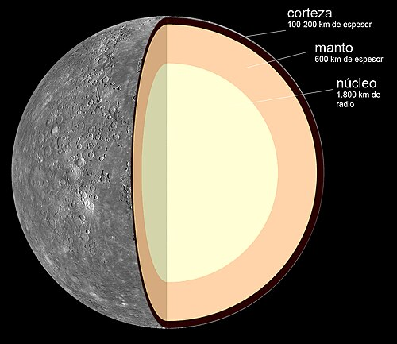
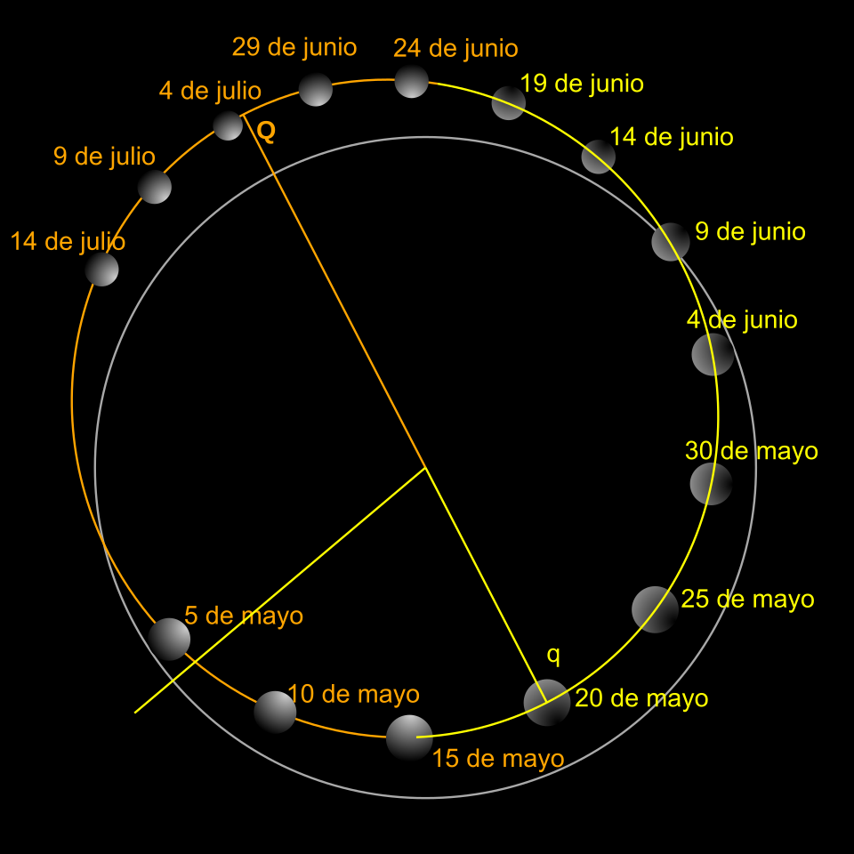

Mercurio es el planeta del sistema solar más cercano al Sol y el más pequeño. Recibió su nombre del hijo del dios romano Júpiter seg. Forma parte de los denominados planetas interiores y carece de satélites naturales al igual que Venus. Se conocía muy poco sobre su superficie hasta que fue enviada la sonda planetaria Mariner 10 y se hicieron observaciones con radar y radiotelescopios. Posteriormente fue estudiado por la sonda MESSENGER de la NASA y actualmente la astronave de la Agencia Europea del Espacio (ESA) denominada BepiColombo, lanzada en octubre de 2018, se halla en vuelo rumbo a Mercurio a donde llegará en 2025 y se espera que aporte nuevos conocimientos sobre el origen y composición del planeta, así como de su geología y campo magnético.
Antiguamente se pensaba que Mercurio siempre presentaba la misma cara al Sol (rotación capturada), situación similar al caso de la Luna con la Tierra; es decir, que su periodo de rotación era igual a su periodo de traslación, ambos de 88 días. Sin embargo, en 1965 se mandaron impulsos de radar hacia Mercurio, con lo cual quedó definitivamente demostrado que su periodo de rotación era de 58.7 días, lo cual es ⅔ de su periodo de traslación. Esto no es coincidencia, y es una situación denominada resonancia orbital.
Al ser un planeta cuya órbita es inferior a la de la Tierra, lo observamos pasar periódicamente delante del Sol, fenómeno que se denomina tránsito astronómico. Observaciones de su órbita a través de muchos años demostraron que el perihelio gira 43" de arco más por siglo de lo predicho por la mecánica clásica de Newton. Esta discrepancia llevó a un astrónomo francés, Urbain Le Verrier, a pensar que existía un planeta aún más cerca del Sol, al cual llamaron Vulcano, que perturbaba la órbita de Mercurio. Ahora se sabe que Vulcano no existe; la explicación correcta del comportamiento del perihelio de Mercurio se encuentra en la teoría general de la relatividad de Einstein.
Estructura interna

Mercurio es uno de los cuatro planetas rocosos o sólidos; es decir, tiene un cuerpo rocoso, como la Tierra. Este planeta es el más pequeño de los cuatro, con un diámetro de 4879 km en el ecuador. Mercurio está formado aproximadamente por un 70 % de elementos metálicos y un 30 % de silicatos. La densidad de este planeta es la segunda más alta de todo el sistema solar, siendo su valor de 5430 kg/m³, solo un poco menor que la densidad de la Tierra. La densidad de Mercurio se puede usar para deducir los detalles de su estructura interna. Mientras la alta densidad de la Tierra se explica considerablemente por la compresión gravitacional, particularmente en el núcleo, Mercurio es mucho más pequeño y sus regiones interiores no están tan comprimidas. Por tanto, para explicar esta gran densidad, el núcleo debe ocupar gran parte del planeta y además ser rico en hierro,[2] material con una alta densidad.[2] Los geólogos estiman que el núcleo de Mercurio ocupa un 42 % de su volumen total (el núcleo de la Tierra apenas ocupa un 17 %). Este núcleo estaría parcialmente fundido,[3][4] lo que explicaría el campo magnético del planeta.
Rodeando el núcleo existe un manto de unos 600 km de grosor. La creencia generalizada entre los expertos es que en los principios de Mercurio un cuerpo de varios kilómetros de diámetro (un planetesimal) impactó contra él deshaciendo la mayor parte del manto original, dando como resultado un manto relativamente delgado comparado con el gran núcleo.[5] (Otras teorías alternativas se discuten en la sección Formación de Mercurio).
La corteza mercuriana mide en torno a los 100‑200 km de espesor. Un hecho distintivo de la corteza de Mercurio son las visibles y numerosas líneas escarpadas o escarpes que se extienden varios miles de kilómetros a lo largo del planeta. Presumiblemente se formaron cuando el núcleo y el manto se enfriaron y contrajeron al tiempo que la corteza se estaba solidificando.[6
Geología y superficie

La superficie de Mercurio, como la de la Luna, presenta numerosos impactos de meteoritos que oscilan entre unos metros hasta miles de kilómetros. Algunos de los cráteres son relativamente recientes, de algunos millones de años de edad, y se caracterizan por la presencia de un pico central. Parece ser que los cráteres más antiguos han tenido una erosión muy fuerte, posiblemente debida a los grandes cambios de temperatura que en un día normal oscilan entre 623 K (350 °C) por el día y 103 K (−170 °C) por la noche.
Al igual que la Luna, Mercurio parece haber sufrido un período de intenso bombardeo de meteoritos de grandes dimensiones, hace unos cuatro mil millones de años. Durante este periodo de formación de cráteres, Mercurio recibió impactos en toda su superficie, facilitados por la práctica ausencia de atmósfera que pudiera desintegrar o frenar multitud de estas rocas. Durante este tiempo, Mercurio fue volcánicamente activo, formándose cuencas o depresiones con lava del interior del planeta y produciendo planicies lisas similares a los mares o marías de la Luna; una prueba de ello es el descubrimiento por parte de la sonda MESSENGER de posibles volcanes.
Las planicies o llanuras de Mercurio tienen dos edades distintas; las llanuras jóvenes están menos craterizadas y probablemente se formaron cuando los flujos de lava enterraron el terreno anterior. Un rasgo característico de la superficie de este planeta son los numerosos pliegues de compresión que entrecruzan las llanuras. Se piensa que, como el interior del planeta se enfrió, se contrajo y la superficie comenzó a deformarse. Estos pliegues se pueden apreciar por encima de cráteres y planicies, lo que indica que son mucho más recientes.[8][9] La superficie mercuriana está significativamente movida a causa de la fuerza de marea ejercida por el Sol. Las fuerzas de marea en Mercurio son un 17 % más fuertes que las ejercidas por la Luna en la Tierra.